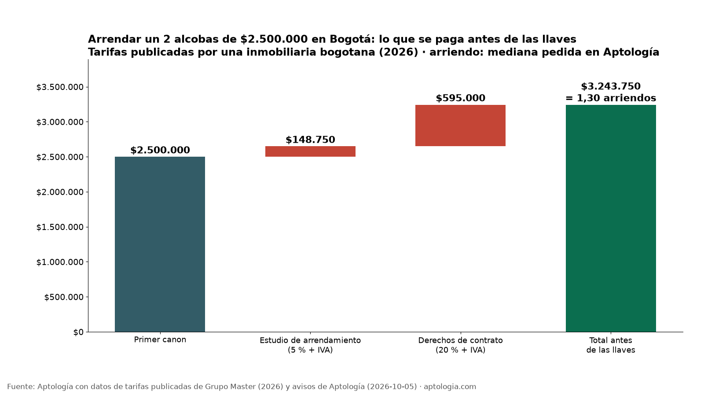
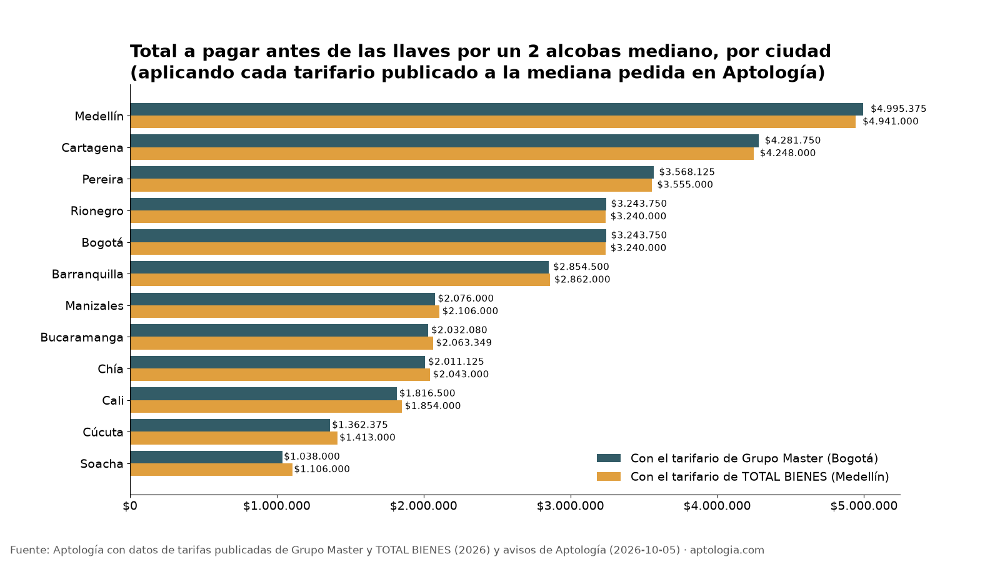

Póliza de arrendamiento, estudio y comisión: cuánto se paga antes de las llaves
Estudio con datos abiertos (CC BY 4.0). Versión original: https://www.aptologia.com/estudios/costo-de-arrendar-antes-de-las-llaves
Arrendar un apartamento con inmobiliaria exige pagar cerca de 1,3 arriendos antes de recibir las llaves. Con las tarifas que publica una inmobiliaria de Bogotá (Grupo Master, 2026), un 2 alcobas de $2.500.000 (la mediana pedida en Bogotá según Aptología) cuesta $3.243.750 de entrada: $743.750 más que el primer mes.
Resumen: comparamos dos tarifarios públicos de 2026, uno de Bogotá y otro de Medellín. Aunque cobran rubros distintos, los dos llevan el costo de entrada a entre 1,28 y 1,38 arriendos en las 12 ciudades medidas, sin contar trasteo ni administración. Los depósitos en dinero como garantía del arriendo están prohibidos en vivienda urbana (Ley 820 de 2003, art. 16).
Actualizado: 9 de octubre de 2026.
Precios pedidos, no de cierre. Las cifras de Aptología son medianas del precio que se pide en los avisos publicados el 5 de octubre de 2026, no lo que finalmente se paga ni se firma.

El "ticket" de entrada (2 alcobas de $2.500.000)
| Rubro | Grupo Master, Bogotá (fuente pública) | TOTAL BIENES, Medellín (fuente pública) |
|---|---|---|
| Estudio | $148.750 (5 % + IVA) | $150.000 (6 %; la hoja no menciona IVA) |
| Derechos de contrato / comisión | $595.000 (20 % + IVA) | $500.000 (20 % del primer canon) |
| Certificado de tradición | — | $30.000 |
| Papelería | — | $60.000 |
| Primer mes | $2.500.000 | $2.500.000 |
| Total | $3.243.750 (1,30 arriendos) | $3.240.000 (1,30 arriendos) |
Los $2.500.000 son la mediana del arriendo pedido para un 2 alcobas en Bogotá (Aptología, 5 de octubre de 2026). Las tarifas salen de los documentos públicos de cada inmobiliaria.
Por ciudad
Aplicando los dos tarifarios a la mediana pedida de un 2 alcobas en cada ciudad (Aptología):
| Ciudad | Arriendo mediano, 2 alcobas (Aptología) | Total con Grupo Master | Total con TOTAL BIENES |
|---|---|---|---|
| Medellín | $3.850.000 | $4.995.375 | $4.941.000 |
| Cartagena | $3.300.000 | $4.281.750 | $4.248.000 |
| Pereira | $2.750.000 | $3.568.125 | $3.555.000 |
| Bogotá | $2.500.000 | $3.243.750 | $3.240.000 |
| Rionegro | $2.500.000 | $3.243.750 | $3.240.000 |
| Barranquilla | $2.200.000 | $2.854.500 | $2.862.000 |
| Manizales | $1.600.000 | $2.076.000 | $2.106.000 |
| Bucaramanga | $1.566.150 | $2.032.080 | $2.063.349 |
| Chía | $1.550.000 | $2.011.125 | $2.043.000 |
| Cali | $1.400.000 | $1.816.500 | $1.854.000 |
| Cúcuta | $1.050.000 | $1.362.375 | $1.413.000 |
| Soacha | $800.000 | $1.038.000 | $1.106.000 |

En los arriendos baratos, el tarifario de Medellín pesa un poco más (hasta 1,38 arriendos en Soacha) porque tiene costos fijos (certificado y papelería) y un estudio del 7 % para cánones de hasta $1.000.000.
Lo que dice la ley
- Depósitos: prohibidos. "En los contratos de arrendamiento para vivienda urbana no se podrán exigir depósitos en dinero efectivo u otra clase de cauciones reales" (Ley 820, art. 16). Tampoco se pueden disfrazar con otro nombre ni pactar en otro documento.
- Excepción, los servicios públicos. El arrendador sí puede pedir una garantía para el pago de los servicios públicos, con un límite: el valor de dos periodos consecutivos de facturación (art. 15).
- Quién vigila. Las alcaldías conocen de los casos de depósitos y de las controversias por su cobro (Ley 820, art. 33, literal a, numeral 3).
- Lo que la ley no regula: el estudio, los "derechos de contrato" y la comisión no están regulados en la Ley 820. Son tarifas de cada inmobiliaria. Pida el desglose por escrito y compare.
Lo que no incluimos (y por qué)
- Trasteo: no encontramos una tarifa pública verificable que sirva de referencia. Puede sumarlo en la calculadora.
- Administración: el dataset de Aptología no la trae; la calculadora la suma si usted la conoce.
- Póliza de servicios públicos, daños y faltantes: Grupo Master publica $123.400, que se pagan una sola vez (fuente), pero no queda claro si la paga el inquilino. La dejamos por fuera del total.
- Codeudores: no tienen costo directo, pero en la hoja de TOTAL BIENES, desde $1.500.000 de canon se piden dos y un certificado de tradición de un inmueble libre de limitaciones.
Metodología
- Datos públicos: tarifarios 2026 publicados por dos inmobiliarias, elegidos porque detallan los cobros al arrendatario. No son una muestra representativa del mercado. También el texto de la Ley 820 de 2003 (Secretaría del Senado).
- Datos de Aptología: mediana del arriendo pedido para 2 alcobas por ciudad (API /hoy, 5 de octubre de 2026). Solo ciudades con al menos 300 avisos de 2 alcobas.
- Cálculo: a cada mediana le aplicamos las fórmulas de cada tarifario, con administración = 0. Detalle en datos.csv.
- Actualización:
actualizar.pyrelee el dataset de Aptología y recalcula todo. Las tarifas se revisan a mano cada enero; las URLs están en el script.
Limitaciones
- Dos tarifarios no representan a todas las inmobiliarias, y arrendar directo con el dueño puede no tener estos cobros. Esto es un ejemplo verificable, no un promedio del mercado.
- Los arriendos son medianas pedidas, no precios cerrados.
- No es asesoría jurídica. Fuera de la prohibición de depósitos del art. 16, este estudio no califica la legalidad de ningún cobro; ante una duda concreta conviene una revisión legal.
Preguntas frecuentes
¿Cuánto cuesta la póliza de arrendamiento? Al inquilino normalmente le llega como el pago del estudio: en los tarifarios revisados, del 5 % + IVA (estudio con Seguros El Libertador, Grupo Master) al 7 % del canon. La prima mensual del seguro aparece en el tarifario de Grupo Master como 2,57 % (El Libertador), 2,97 % (Zurich) y 2,85 % (Unifianza), calculada sobre el canon, la administración y el IVA. Ese tarifario no dice explícitamente quién paga la prima, así que no la sumamos al total del inquilino.
¿Cuánto cobra una inmobiliaria por arrendar un apartamento? En los dos tarifarios públicos revisados, el inquilino paga un estudio del 5 % al 7 % del canon y unos "derechos de contrato" o comisión del 20 % del canon (más IVA en uno de ellos). En total, cerca de 0,3 arriendos además del primer mes.
¿Es legal que me pidan un depósito para arrendar? La Ley 820 de 2003 (art. 16) establece que en vivienda urbana no se podrán exigir depósitos en dinero ni otras cauciones reales para garantizar las obligaciones del arrendatario. La garantía que sí contempla es la de los servicios públicos, con un tope de dos periodos de facturación (art. 15).
¿Cuánto cuesta el estudio de arrendamiento? En los tarifarios revisados, entre el 5 % + IVA y el 7 % del canon. En un arriendo de $2.500.000, unos $150.000. Si el estudio sale negativo, TOTAL BIENES advierte que no se devuelve el dinero.
¿Se puede arrendar sin fiador? Depende de la inmobiliaria y de la aseguradora. En el tarifario de TOTAL BIENES, desde $1.500.000 de canon se piden dos deudores solidarios.
¿Cuánta plata necesito para mudarme a un apartamento en arriendo? Con inmobiliaria, unos 1,3 arriendos antes de las llaves, más trasteo y administración. Para un 2 alcobas mediano en Bogotá son $3.243.750.
Demanda de búsqueda
Trends (2026-10-09): 'poliza de arrendamiento' domina (30 de promedio en 5 años, 43 en 12 meses) frente a 'fiador arriendo' (5), 'requisitos para arrendar' (3) y 'deposito arriendo' (1). Por eso pasa a ser la query principal. 'requisitos para arrendar un apartamento' sube 40 %. Pico en enero, con repuntes en abril-mayo y julio. Comparación: Google Trends. Son valores relativos, sin volúmenes absolutos. El autocompletado de Google, consultado el mismo día, está en meta.json.
Cómo citar
Pinzón Pineda, D. M. (2026). Póliza de arrendamiento, estudio y comisión: cuánto se paga antes de las llaves. Aptología. Con tarifas publicadas por Grupo Master y TOTAL BIENES (2026), la Ley 820 de 2003 y avisos de arriendo de Aptología. https://www.aptologia.com/estudios/costo-de-arrendar-antes-de-las-llaves. Datos: datos.csv, licencia CC BY 4.0.